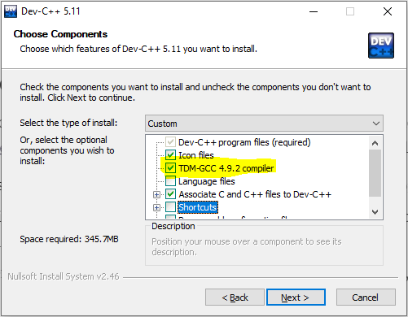
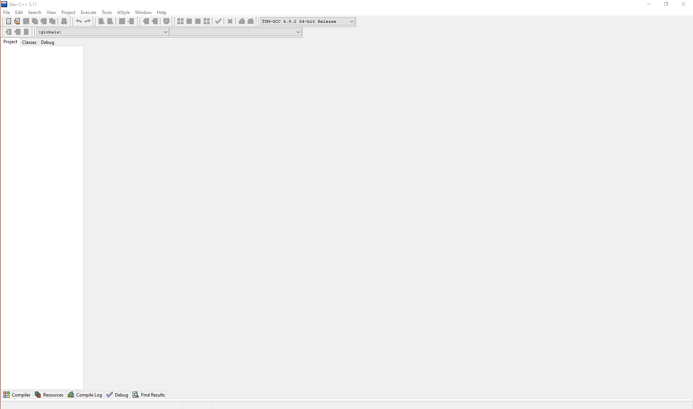
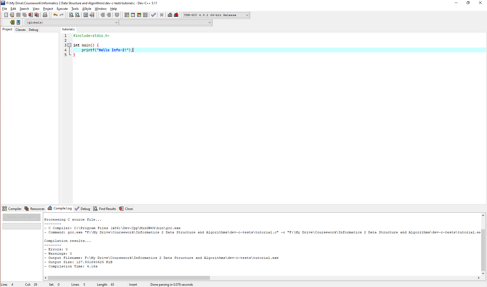
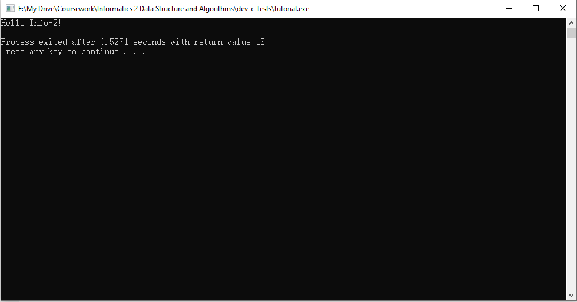
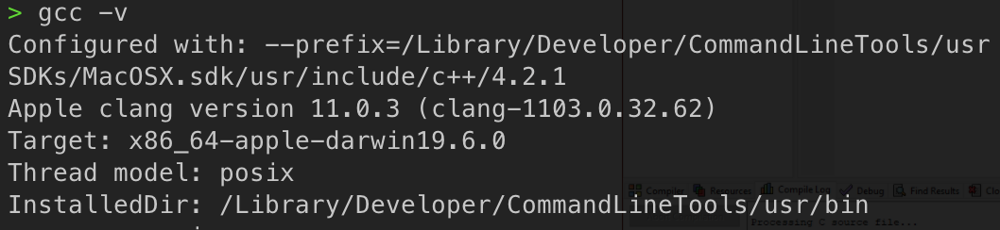
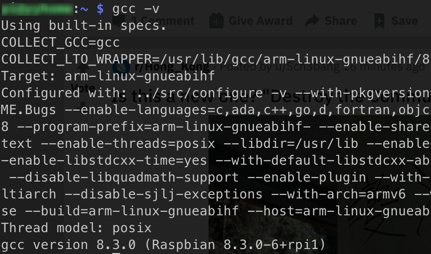
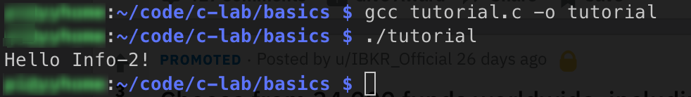

Preface
Welcome to the Informatics II Cheatsheet!
What is this?
The Info-2 cheatsheet is intended to be a non-exhaustive collection of what you need to know about data structures and algorithms.
How it works?
When the TAs and Tutors are preparing for the exercises, they will put some notes into this collection.
If you met some problems that you think is necessary to be added into this cheatsheet, do not hesitate to propose it in the issues, or create a merge requests. By doing so, you can not only revise and remember the stuff, but also help other students understand it. In this process, TAs and Tutors will revise what you proposed and check if they are correct and if they are needed to be added.
Recommended Environments
During this course, we will use gcc as the default compiler for C. If you are using Mac OS or Linux, gcc should have been installed on your machine. If you are using Windows, you may need an IDE to compile and run your C code. For how to verify and install the environments, please refer to Installation.
Installation of C Compiler
Just like in the Info-1 course, you will need a compiler to finish the exercises (and exams) for Info-2, but we need a compiler for C this time. In this tutorial, we will provide some instructions on how to set up your compiler, and how to use its basic functions.
Windows Users
Installation
If you are using Windows, we recommend you to use Dev-C/C++, which can be downloaded at https://sourceforge.net/projects/orwelldevcpp/. The installation are listed as below:
-
Download the installer. It should be some .exe file with the filename
Dev-cpp 5.11 TDM-GCC 4.92 setup.exe. -
Double click the installer, select your preferred language (we recommend you to use English, as in future we will demonstrate the process in English version).
-
Choose components. Make sure you have tick the
TDM-GCC 4.92 compiler, as illustrated below:
-
Click Next and finish the installation process, as prompted.
-
Launch the Dev-C++ from your desktop icon or the menu, and you should be able to see the following window:

- Click the
File->New->Source Filebutton to create a new.cfile, and you can start programming! - When you write some code, you can save the source file to some folder on your local computer.
Run Your Program
Now that you've write some code in the new file you created, you can compile and run your program in the Dev-C++ environment. Now assume we have the code below:

You can then press F11, or click the Execute->Compile & Run button to compile and run your code. After you do it, you will see a window as below:

If you see the same thing with me, then congratulations, you are good to go!
Mac OS/Linux Users
If you are using Mac OS or Linux (e.g. Ubuntu, Fedora, etc), then you should already have gcc installed, which is one of the most popular c compiler. In order to check this, type gcc -v in your terminal.
On Mac OS, you should be able to see:

On Linux, you should be able to see:

As long as you are not receiving an ``Unknown Command```, you should be good to go, and you can then use any code editor, e.g. VSCode to edit your code, compile it with gcc and run it in terminal.
For example, assume we have the same C code named tutorial.c that simply prints the Hello Info-2!. Then we can compile and run it with:
gcc tutorial.c -o tutorial // compile
./tutorial // run
You should be able to see the following results:

If so, then you are good to go!
Compiler
Compile a Single Source File
gcc example.c -o example.run
Then we could run the executable file by ./example.run.
- The filename is considered as the input file of our compiler. It is passed to the compiler without any parameters.
- The parameter
-ospecifies the output executable file name.
Functions
A function is a pointer to some code, parameterized by formal parameters, that may be executed by providing actual parameters. Functions must be declared before they are used, but code may be provided later. For example, a sqrt function that returns the given integer parameter \(n\) might be declared as:
int echo(int n) {
return n;
}
Strings
Termination Character
The termination character for a string is '\0'.
Useful Functions
Before using the following functions, you must import the header file by #include<string.h>
strlen(s): return length of string; number of characters before the termination character.
Input/Output
To use the functions mentioned in this page, you must import the header file by #include<stdio.h>.
scanf(p,...): reads ... args using formatp.printf(p, ...): write ... args using formatp.
The non-exhaustive formats are listed below:
| No. | Char | Meaning |
|---|---|---|
| 1 | %c | Character |
| 2 | %d | Decimal integer |
| 3 | %s | String |
| 4 | \n | Newline |
| 5 | \t | Tab |
Arrays
First of all, there is a difference between the usage of an array in pseudocode and the usage of an array in C.
When it comes to pseudocode, we use position to describe the elements in an array, and the position starts at 1. While in C programming, we use indices to access the elements in an array, and the index starts at 0. It is important to learn this difference, and you need to be careful about this difference in your practise and your exam.
An array of integers in Pseudocode
In tasks of exercises and exams, you might see the description like "an array of Integer A[] with n integers".
A loop from the first element to the last element of A[] is
for(int i = 1; i <= n; i++){
num = A[i] #access the element at position i.
}
An array of integers in C
In tasks of exercises and exams, you might see the description like "an array of Integer A[] with \( n \) integers".
Let's initialize an array of 4 integers(n = 4) as follows.
int A[] = {1, 2, 3, 4}
with \(n = 4\).
Remember that the index of an array in C starts from \(0\). A loop from the first element to the last element is
for(int i = 0; i <n; i++){
int num = A[i] // access the element at index i.
}